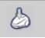
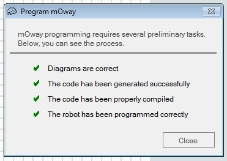

Robot Moway

Le logiciel MowayWorld
Le logiciel MowayWorld permet de créer des algorigrammes pour programmer différentes tâches que le robot exécutera de manière autonome. Différents blocs représentent les capteurs et les actionneurs du robot, et se raccordent entre eux aux moyens de flèches afin de créer le programme désiré.
Interface du logiciel MowayWorld.
Barre d'outils
Avec la barre d'outils, il est possible de gérer le projet, d'éditer l'algorigramme, de créer des variables, de vérifier l'algorigramme, de compiler et transférer le programme dans le robot, et d'accéder à beaucoup d'autres fonctionnalités.
Barre d'outils.
Fenêtre d'édition des algorigrammes
La fenêtre d'édition des algorigrammes est l'endroit où les blocs sont disposés et connectés afin de créer un programme. A la création d'un nouveau projet, la fenêtre contient seulement le point de départ de l'algorigramme.
Fenêtre d'édition d'algorigrammes.
Boite à Outils
Dans la partie gauche de l'interface de MowayWorld on trouve la boite à outils. Elle comporte les blocs permettant de contrôler le robot pour le déplacer, vérifier l'état des capteurs, communiquer, etc. Les blocs sont groupés par types de fonction (Actions, Capteurs, Données, Contrôle de l'algorigramme, Modules d'extension).
Boite à outils.
Consignes d'utilisation du robot
L'utilisation du robot doit suivre les étapes suivantes:
- Ouverture du logiciel MowayWorld, et création du programme dans la fenêtre d'édition des algorigrammes.
- Mise à l'arrêt du robot avec l'interrupteur marche/arrêt, situé en dessous du robot,
en position OFF, et branchement du robot Moway au PC avec le câble USB. Le message "Connected", en bas à gauche
dans l'interface de MowayWorld, indique que le robot est correctement connecté.
Message "Connected" et état de la batterie. - Compilation et transfert du programme dans le robot en cliquant sur le bouton
"Program mOway" dans la barre d'outils. Si l'algorigramme est juste et si le transfert réussit, un message
confirmant le succès des opérations s'affiche.

Bouton "Program mOway".
Confirmation des opérations de compilation et de transfert. - Débranchement du robot et mise en marche, avec l'interrupteur marche/arrêt en position ON, pour tester le programme.
- Branchement du robot, pendant qu'il n'est pas utilisé, pour charger la batterie.
Programmation du robot
Créez l'algorigramme ci-dessous en glissant-déposant, depuis la boite à outils, des blocs "Lights" et "Pause", en utilisant les informations de configuration des boites de dialogue ci-dessous, et en raccordant les blocs entre eux.
Premier Algorigramme.
Configuration du premier bloc "Lights".
Configuration du deuxième bloc "Lights".
Configuration des blocs "Pause".
Testez le programme avec le robot et expliquez son fonctionnement:
Problèmes de programmation
Problème 1:
Allumer successivement les DEL du robot avec un intervalle de temps de 1 seconde entre chaque allumage, et répéter cette opération indéfiniment.
Problème 2:
Allumer la DEL verte lorsque le robot est posé sur un sol (de teinte claire) et la DEL rouge lorsqu’il quitte le sol.
Problème 3:
A la mise sous tension, 3 secondes après avoir a été posé sur le sol, le robot doit se déplacer en marche avant à vitesse maximum sur 20cm, il doit aussi allumer la DEL verte lors de la marche avant et la DEL rouge au bout des 20cm.
Problème 4:
A la mise sous tension, une fois posé au sol et une pause de 5s, le robot doit faire 8 quarts de tour sur son centre à gauche suivie de 8 quarts de tour à droite avec une vitesse de 100%, puis il recommence au bout de 5s en diminuant sa vitesse de 10%, jusqu'à une vitesse nulle. Un seul cycle de rotations doit être programmer avec une variable pour paramétrer la vitesse. La variable doit être décrémenter pour diminuer la vitesse.
Problème 5:
Le robot doit faire successivement les trois rondes ci-dessous. A la mise sous tension et entre chaque ronde, il doit faire une pause de 3s et attendre une consigne sonore (ex : clappement des mains). Les lignes droites doivent être parcourues sans à-coups. Chacune des trois rondes doit être programmer dans une fonction différente.
Problème 6:
A la mise sous tension, le robot doit avancer tout droit, tout en vérifiant la présence d’obstacle. A chaque fois qu’il détecte un obstacle, le robot doit faire 1/4 de tour sur la droite ou la gauche afin d’éviter l’obstacle.
Compétition
Proposez un programme permettant de faire, le plus rapidement possible, 5 tours de piste (Le support avec une piste est disponible en salle de classe) avec le robot.
Consignes pour la compétition:
- A la mise sous tension, le robot fait une pause de 3 secondes et attendant une consigne sonore.
- Au départ, le robot peut être positionné dans, au choix, un des deux sens de la piste, et il ne doit pas faire de demi-tours pendant le parcours. Le résultat n'est validé que si le robot est capable de faire la course dans les deux sens de la piste.
- Le robot doit s'arrêter de lui-même après moins de 5 tours et un quart de piste.